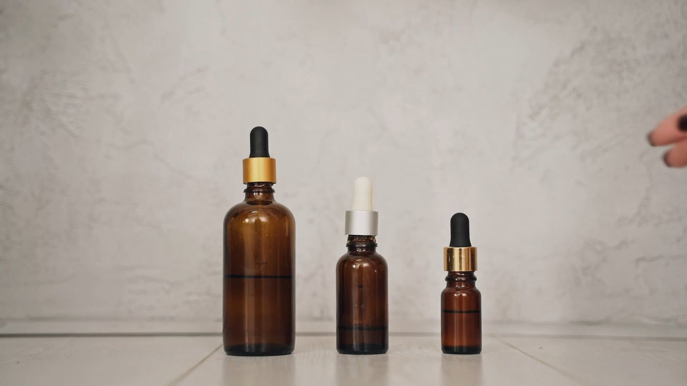
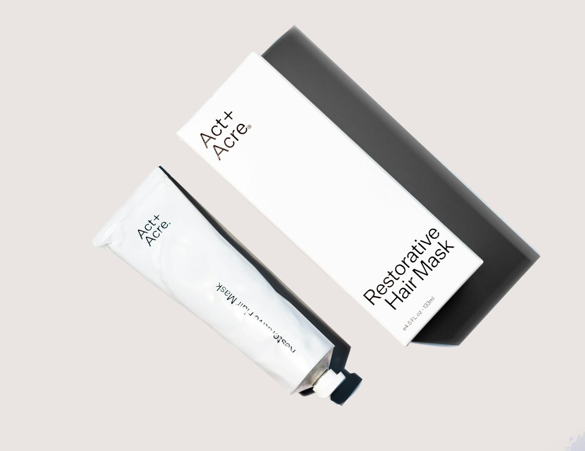
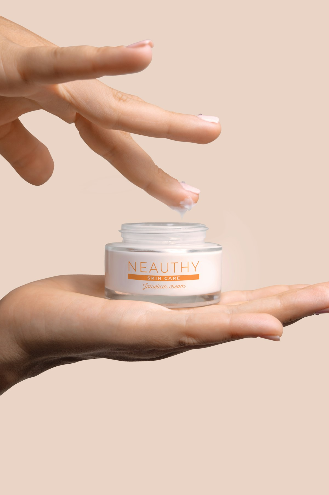
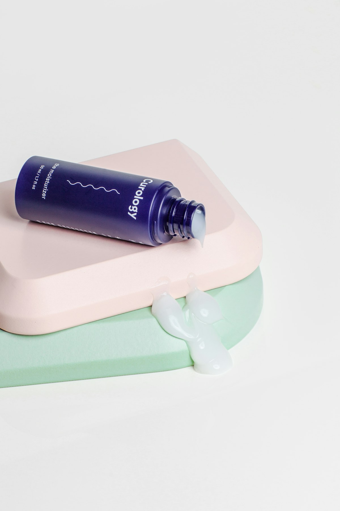

03 / CONCEPT STUDYAN INDEPENDENT CONCEPT — NOT CLIENT WORK
A good store makes the product the point.
An early storefront concept: clear paths, considered product storytelling, and room for a brand to breathe. A direction to explore—not a client project or a claim of results.
FIELDNOTES.STUDIO / SHOP↗
FIELDNOTES®
SHOPOUR APPROACHJOURNAL
BAG 0
LESS, BUT BETTER.
Good skin. Good sense.
Everyday care, made with care.
EXPLORE THE COLLECTION ↗

01 / THE DAILY RITUAL
CONCEPT 01 · NOT CLIENT WORKAn exploration in calm, product-first commerce.
THE BRIEF
A fictional skincare shop with a calm, product-first point of view.
THE FOCUS
Storefront direction, product discovery, and responsive shopping.
THE STATUS
An independent visual study—not commissioned client work.
A CLOSER LOOK
Room for the details.
A few visual directions for introducing a product, explaining its ritual, and giving the brand a human point of view.

01 / THE EVERYDAY RITUALLet the product lead.

02 / TEXTURE & USEShow what words cannot.

03 / THE HUMAN SIDEMake the routine feel real.
01
A clear first impression.
Lead with a useful promise, an immediate route into the collection, and imagery that earns its place.
02
Product pages with purpose.
Make the essentials easy to scan: what it is, how to use it, and what to expect.
03
Comfortable on every screen.
Keep the same calm hierarchy and easy-to-reach actions on smaller mobile layouts.
Have a real store that needs this kind of thoughtful attention?